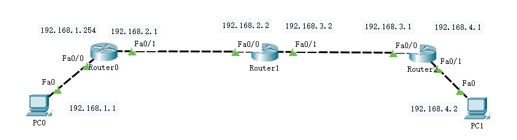

RIP 路由协议
- 一、实验目的
- 1. 了解RIP协议的基本原理；
- 2. 掌握RIP协议的配置方法；
- 3. 进一步熟悉PT的使用；
- 二、基本原理
- 1. RIP-Routing Information Protocol，路由信息协议；动态路由；适合小型网络；最大跳数15；当前版本为RIP2；
- 2. 在直连路由的基础上，为网络生成动态路由；
- 三、实验要求
- 1. 根据网络拓扑完成RIP的配置；
- 2. 测试网络的连通性；
- 3. 网络拓扑布局合理、标注信息清晰完整；
- 4. 关键配置有源码或截图；
- 5. 测试结果有截图；
- 四、实验需求
- 实验需要的设备名称和数量，包括扩展使用的模块；
- 五、实验过程
- 1.搭建拓扑并配置各主机IP地址；确保各路由连接的是不同的网络；

- 2. 路由器0的配置
- 2.1 配置路由器端口，生成直连路由；主要配置命令如下；
-
Router(config)#interface fa0/0 Router(config-if)#ip address 192.168.1.254 255.255.255.0 Router(config-if)#no shutdown Router(config)#interface fa0/1 Router(config-if)#ip address 192.168.2.1 255.255.255.0 Router(config-if)#no shutdown - 2.2 配置路由器RIP协议；主要配置命令如下；
-
Router(config)#router rip 使用rip路由协议 Router(config-router)#version 2 使用支持CIDR的版本2；版本1部支持 Router(config-router)#no auto-summary 取消路由聚合 Router(config-router)#network 192.168.1.0 设置与其相连的网络 Router(config-router)#network 192.168.2.0 设置与其相连的网络 - 3. 路由器1、路由器2的配置同路由器0；
- 4. 查看各路由器的动态路由信息；
- 4.1 使用PT的监视工具查看；
- 4.2 使用路由器的CLI命令查看路由：Router#show ip route
- 4.2 使用路由器的CLI命令查看路由协议：Router#show ip protocols
- 5. 测试网络的连通性；
- 5.1 发送简单PDU测试；
- 5.2 在主机CMD命令窗口中ping对方主机；
- 六、实验分析
- 每个实验阶段的分析和异常处理。
- 七、心得体会
- 实验操作的感悟；不少于200字。
- 八、格式
- 1. A4纸张；正文字号：小四，中文宋体，英文Times New Roman；一级标题：宋体，四号，加粗；代码为英文Calibri。
- 2. 行距：单倍行距；段前1行，段后0.5行。
- 3. 图形和表格居中放置，图下面有图标识，表格上面有表头（皆5号宋体）。
- 4. 封面单独打印；内页双面打印。
- 5. 更多内容，请参照范文[点击下载]。
-

- 图1 厦工欢迎您
- 表1 Group_Appended表
-
id name gender unit cell 10001 xit female 54414 13513145200 10002 glu male 75716 13513145211 10003 pla male 75660 13114130011